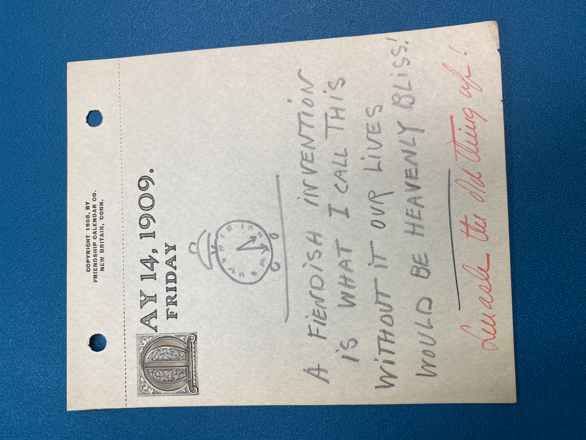

Drawing of a black and white clock that shows the time of
5:30 with an underline signifying a table that holds the clock.—#zmurphy
May 14, 1909.
Friday
A Fiendish invention
Is what I call this
Without it our lives
would be heavenly bliss!
Parsle the old thing off